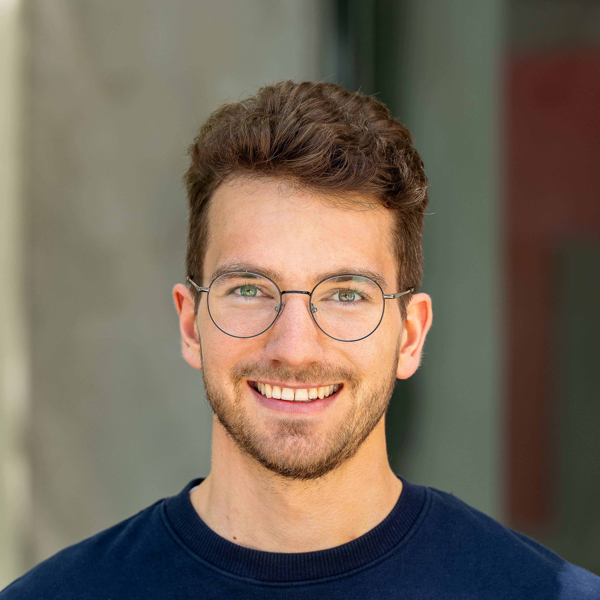

Welcome to my digital workspace. I am currently pursuing my Master's degree in Robotics, Cognition, Intelligence (RCI) at the Technical University of Munich (TUM).
My practical experience spans from training custom AI models, robot kinematics and dynamics to developing scalable CI/CD pipelines and robotic testing frameworks. I thrive at the intersection of software and hardware, building scalable robotic solutions.
I actively participate in hackathons—recently winning 1st place for "Best Prototype" at the Circular Hackfest. When I'm not writing code or building robots, you can find me bouldering, playing beach volleyball, or mountain biking in the Chiemgau Alps.